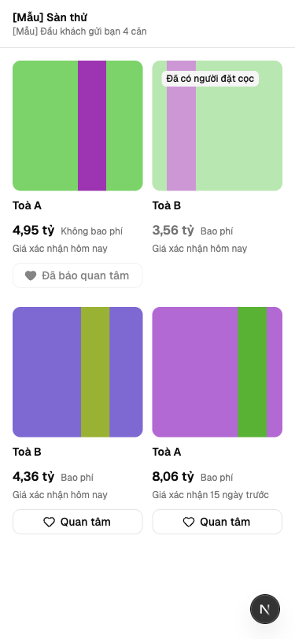
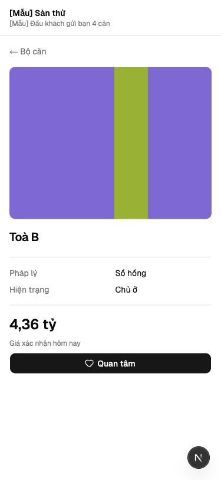
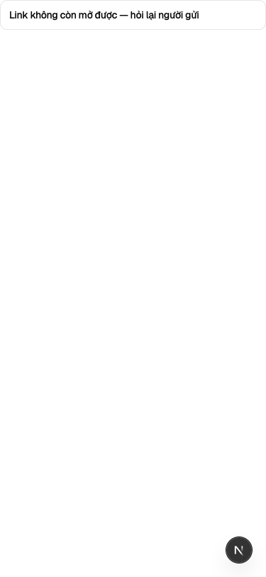

Khách mở link từ Zalo và thấy bộ căn mang tên sàn, giá sống kèm «giá xác nhận X ngày trước», căn đã cọc tự mờ, chạm «Quan tâm» được
Vì sao làm
Màn P0 (T1–T3); mặc định chốt 29/10 Số đo hai tuần thử gần nhất (Tham chiếu §11): Số link khách mở, số lượt quan tâm — ngưỡng số đặt trước khi thử.
Đã hứa
- AC-1 — (cross-layer) — Given một Lần gửi còn bật có n căn, When khách mở `/s/<mã>` không đăng nhập, Then không bị đưa về `/login` (các trang vận hành chưa phiên vẫn bị đưa
- AC-2 — — Given người nhận của Lần gửi, When dựng trang, Then khách riêng không thấy mã căn, trục, tầng số (chỉ toà
- AC-3 — (cross-layer) — Given trạng thái căn lúc mở, When dựng trang, Then căn Đang giao dịch mờ đi với nhãn «Đã có người đặt cọc» và
- AC-4 — (cross-layer) — Given trang đã chạy ở trình duyệt, When trang tải xong, Then đúng một lời gọi
- AC-5 — (cross-layer) — Given một căn Đang bán trên trang, When khách chạm «Quan tâm», Then ghi một sự kiện `interest` (hằng
- AC-6 — (cross-layer) — Given mã không có, Lần gửi đã tắt (`disabled_at`), hay người gửi không còn thuộc sàn (Hỏi-5,
- AC-7 — (cross-layer) — Given ảnh bìa của một căn trong bản ra, When trang xin ảnh qua
- AC-8 — — Given mọi người nhận và mọi cấu hình luật ẩn của hàng 31, When dựng thân route đọc công khai từ căn mồi, Then
- AC-9 — (cross-layer) — Given bảng `share_events` mới, When chạy bộ kiểm cách ly, Then bảng bật `enable` + `force row
- AC-10 — — Given trang khách là màn đầu của nhóm «trang khách» (luật đợt 18), When chạy lưới giao diện, Then có
Thiết kế
docs/superpowers/specs/2026-11-04-trang-khach-rieng-design.md
Quyết định
- 2026-11-04 · Máy · approach · S1 — Đã tra tri thức: Khách mở link từ Zalo và thấy bộ căn mang tên sàn, giá sống kèm «giá xác nhận X ngày trước», căn đã cọc tự mờ, chạm «Quan tâm» đượcKho đã khai tri_thuc — bước thiết kế tra trang trước khi chọn.
- 2026-11-04 · Máy · approach · S1 — Dữ liệu trang khách dựng ở API bằng banRaNgoai của lõi; trang chỉ nhận CanRaNgoai[].Bất biến 4 và luật đợt 19: hàng 35 chỉ dựng dữ liệu ra bằng luật ẩn của 31; AC-1, AC-8.
- 2026-11-04 · Máy · approach · S1 — Route đọc tìm Lần gửi qua một hàm theo mã (quyền chủ, chỉ trả sàn, người gửi, người nhận, cờ bật) rồi đọc căn trong phiên của chính người gửi để luật theo dòng vẫn áp.Bất biến 1 và yêu cầu giám sát L-20: hàm security definer lọc đúng một Lần gửi theo mã, không lộ sàn khác; AC-9.
- 2026-11-04 · Máy · approach · S1 — Lượt mở đếm bằng một lời gọi từ trình duyệt sau khi trang chạy, không đếm lúc máy chủ dựng trang.Kết luận hàng 3 và luật đợt 21: Zalo tự tải trang lấy ảnh xem trước, lượt ấy không phải khách mở; AC-4.
- 2026-11-04 · Máy · approach · S1 — Trang và route công khai không lưu đệm (no-store, force-dynamic).Luật sản phẩm 26 ở Tham chiếu: giá và trạng thái sống; AC-3.
- 2026-11-04 · Máy · approach · S1 — Rào route công khai đọc danh sách route đã đăng ký trên app API; route dưới /api/v1/public/ không có bài rò rỉ nêu đường thì đỏ.Luật đợt 39 (H-5 hàng 31) giao rào này cho hàng 35; AC-8.
- 2026-11-04 · Máy · approach · S1 — Link tắt hay mã sai hiện một câu chung không lộ sàn; nút tắt link thuộc Đã gửi (hàng 36).Tham chiếu §12: người gửi tắt được link (chốt 29/10); cột disabled_at đã có ở migration 021; AC-6.
- 2026-11-04 · Máy · approach · S1 — Hỏi-1: lối giao diện của trang khách — khuyên ReUI (wishlist-3 danh sách + product-detail-5 chi tiết, bỏ giỏ).Màn đầu của nhóm mới, ADR-0019 mở trang ba lối; khối đích ở vo-va-ia.md §2.
- 2026-11-04 · Máy · approach · S1 — Hỏi-2: bản đầu không hiện số điện thoại người gửi trên trang khách.Hàng 31 đẩy câu này sang Cổng Phạm vi hàng 35; khách mở từ Zalo nên đã có đường nhắn người gửi.
- 2026-11-04 · Máy · approach · S1 — Hỏi-3: «Quan tâm» một mức — một nút mỗi căn, một máy một lượt, không bỏ quan tâm, không thu số khách.Tham chiếu chốt giữ «Quan tâm» (29/10) nhưng không chốt mức; RESO ContactListings có ba mức.
- 2026-11-04 · Máy · approach · S1 — Hỏi-4: căn không còn bán giữ chỗ cũ trong bộ, mờ đi với nhãn, không giá ở tạm ngưng và không còn, không nút Quan tâm.Hàng 31 đã chốt giá theo trạng thái; câu còn lại là giữ hay giấu căn trên trang.
- 2026-11-04 · Máy · approach · S1 — Rào route công khai đọc danh sách route đã đăng ký trên app API; route dưới /api/v1/public/ không có bài rò rỉ nêu đường thì đỏ.Hàng 31 thu nhánh này và giao cho hàng 35 (H-5, luật đợt 39); AC-8.
- 2026-11-04 · Máy · approach · S1 — Đường /s/ mở không phiên ở bộ chặn đăng nhập của web (apps/web/src/proxy.ts); trang vận hành chưa phiên vẫn về /login.Trang khách là link công khai không đăng nhập; design-pass thấy /s/… bị đưa về /login; AC-1, E1b.
- 2026-11-04 · Máy · approach · S1 — Chạy design-pass với trang ba lối /s/ba-loi (Trong kho · ReUI · Vẽ mới); trang gỡ khỏi cây khi chủ kho chọn lối.Màn đầu của nhóm trang khách (luật đợt 18, ADR-0019); ảnh ở _acceptance/trang-khach-rieng/ba-loi/.
- 2026-11-04 · Máy · approach · S1 — Hỏi-5: link đã tắt và mã không có hiện cùng một câu «Link không còn mở được — hỏi lại người gửi», không tên sàn, không căn.Tham chiếu chỉ chốt người gửi tắt được link, không chốt trang tắt hiện gì; phản biện P0-1.
- 2026-11-04 · Máy · approach · S1 — Hỏi-6: link của người gửi không còn thuộc sàn coi như đã tắt — không đọc thay bằng danh tính khác.Route đọc căn trong phiên người gửi (luật theo dòng); thiết kế chưa nói khi người gửi rời sàn; phản biện P0-2; AC-6, E6.
- 2026-11-04 · Người (Manh Phan) · approach · S2 — Gate 1.5: chủ kho duyệt kế hoạch thi công sáu việc (docs/superpowers/plans/2026-11-04-trang-khach-rieng.md).Hạng T3 dừng ở Gate 1.5; chủ kho gõ «duyệt kế hoạch».
- 2026-11-04 · Máy · approach · S3 — Gỡ trang ba lối /s/ba-loi khỏi cây sau khi chủ kho chọn lối ReUI; ảnh giữ ở _acceptance/trang-khach-rieng/ba-loi/.Luật đợt 45 cho gỡ trang ba lối đã xong việc; AC-10, E3c.
- 2026-11-04 · Máy · fix · S3 — Route đọc công khai trả thêm listingIds (mã hàng nội bộ của từng căn, cùng thứ tự) để nút «Quan tâm» báo đúng căn; mọi giá trị căn vẫn chỉ là bản ra.Kế hoạch bỏ sót: E5 và E5b đo lượt quan tâm theo listingId, mà bản ra banRaNgoai không mang mã hàng; AC-1 nói thân «chỉ gồm» bản ra cùng tên sàn, người gửi, người nhận.
- 2026-11-04 · Người · seal · gate1 —
Bằng chứng
Các eval
| Eval | Tiêu chí | Loại | Verdict | run_id | verified_at |
|---|---|---|---|---|---|
| E1 | AC-1 | test | PASS | minted-trang-khach-rieng-E1-r1 | 2026-11-04T08:38:26Z |
| E1b | AC-1 | test | PASS | minted-trang-khach-rieng-E1b-r1 | 2026-11-04T08:38:26Z |
| E2 | AC-2 | test | PASS | minted-trang-khach-rieng-E2-r1 | 2026-11-04T08:38:26Z |
| E3 | AC-3 | test | PASS | minted-trang-khach-rieng-E3-r1 | 2026-11-04T08:38:26Z |
| E3b | AC-3 | test | PASS | minted-trang-khach-rieng-E3b-r1 | 2026-11-04T08:38:26Z |
| E3c | AC-3 | test | PASS | minted-trang-khach-rieng-E3c-r1 | 2026-11-04T08:38:26Z |
| E4 | AC-4 | test | PASS | minted-trang-khach-rieng-E4-r1 | 2026-11-04T08:38:26Z |
| E4b | AC-4 | test | PASS | minted-trang-khach-rieng-E4b-r1 | 2026-11-04T08:38:26Z |
| E5 | AC-5 | test | PASS | minted-trang-khach-rieng-E5-r1 | 2026-11-04T08:38:26Z |
| E5b | AC-5 | test | PASS | minted-trang-khach-rieng-E5b-r1 | 2026-11-04T08:38:26Z |
| E6 | AC-6 | test | PASS | minted-trang-khach-rieng-E6-r1 | 2026-11-04T08:38:26Z |
| E6b | AC-6 | test | PASS | minted-trang-khach-rieng-E6b-r1 | 2026-11-04T08:38:26Z |
| E7 | AC-7 | test | PASS | minted-trang-khach-rieng-E7-r1 | 2026-11-04T08:38:26Z |
| E8 | AC-8 | script | PASS | minted-trang-khach-rieng-E8-r1 | 2026-11-04T08:38:26Z |
| E9 | AC-9 | test | PASS | minted-trang-khach-rieng-E9-r1 | 2026-11-04T08:38:26Z |
| E10 | AC-10 | test | PASS | minted-trang-khach-rieng-E10-r1 | 2026-11-04T08:38:26Z |
| E11 | AC-3 | ui-check | PASS | minted-trang-khach-rieng-E11-r1 | 2026-11-04T08:38:26Z |
| E12 | AC-10 | script | PASS | minted-trang-khach-rieng-E12-r1 | 2026-11-04T08:38:26Z |
Chi tiết từng eval
PASS E1 · test
AC-1: (cross-layer) — Given một Lần gửi còn bật có n căn, When khách mở `/s/<mã>` không đăng nhập, Then không bị đưa về `/login` (các trang vận hành chưa phiên vẫn bị đưa
npm run db:migrate && npm run db:test ℹ duration_ms 49462.570834
PASS E1b · test
AC-1: (cross-layer) — Given một Lần gửi còn bật có n căn, When khách mở `/s/<mã>` không đăng nhập, Then không bị đưa về `/login` (các trang vận hành chưa phiên vẫn bị đưa
npm test -w @quy-hang/web ℹ duration_ms 3198.774375
PASS E2 · test
AC-2: — Given người nhận của Lần gửi, When dựng trang, Then khách riêng không thấy mã căn, trục, tầng số (chỉ toà
npm test -w @quy-hang/web ℹ duration_ms 3198.774375
PASS E3 · test
AC-3: (cross-layer) — Given trạng thái căn lúc mở, When dựng trang, Then căn Đang giao dịch mờ đi với nhãn «Đã có người đặt cọc» và
npm test -w @quy-hang/web ℹ duration_ms 3198.774375
PASS E3b · test
AC-3: (cross-layer) — Given trạng thái căn lúc mở, When dựng trang, Then căn Đang giao dịch mờ đi với nhãn «Đã có người đặt cọc» và
npm run db:migrate && npm run db:test ℹ duration_ms 49462.570834
PASS E3c · test
AC-3: (cross-layer) — Given trạng thái căn lúc mở, When dựng trang, Then căn Đang giao dịch mờ đi với nhãn «Đã có người đặt cọc» và
npm test -w @quy-hang/web ℹ duration_ms 3198.774375
PASS E4 · test
AC-4: (cross-layer) — Given trang đã chạy ở trình duyệt, When trang tải xong, Then đúng một lời gọi
npm test -w @quy-hang/web ℹ duration_ms 3198.774375
PASS E4b · test
AC-4: (cross-layer) — Given trang đã chạy ở trình duyệt, When trang tải xong, Then đúng một lời gọi
npm run db:migrate && npm run db:test ℹ duration_ms 49462.570834
PASS E5 · test
AC-5: (cross-layer) — Given một căn Đang bán trên trang, When khách chạm «Quan tâm», Then ghi một sự kiện `interest` (hằng
npm test -w @quy-hang/web ℹ duration_ms 3198.774375
PASS E5b · test
AC-5: (cross-layer) — Given một căn Đang bán trên trang, When khách chạm «Quan tâm», Then ghi một sự kiện `interest` (hằng
npm run db:migrate && npm run db:test ℹ duration_ms 49462.570834
PASS E6 · test
AC-6: (cross-layer) — Given mã không có, Lần gửi đã tắt (`disabled_at`), hay người gửi không còn thuộc sàn (Hỏi-5,
npm run db:migrate && npm run db:test ℹ duration_ms 49462.570834
PASS E6b · test
AC-6: (cross-layer) — Given mã không có, Lần gửi đã tắt (`disabled_at`), hay người gửi không còn thuộc sàn (Hỏi-5,
npm test -w @quy-hang/web ℹ duration_ms 3198.774375
PASS E7 · test
AC-7: (cross-layer) — Given ảnh bìa của một căn trong bản ra, When trang xin ảnh qua
npm run db:migrate && npm run db:test ℹ duration_ms 49462.570834
PASS E8 · script
AC-8: — Given mọi người nhận và mọi cấu hình luật ẩn của hàng 31, When dựng thân route đọc công khai từ căn mồi, Then
npm run test:ro-ri ℹ duration_ms 500.292125
PASS E9 · test
AC-9: (cross-layer) — Given bảng `share_events` mới, When chạy bộ kiểm cách ly, Then bảng bật `enable` + `force row
npm run db:migrate && npm run db:test ℹ duration_ms 49462.570834
PASS E10 · test
AC-10: — Given trang khách là màn đầu của nhóm «trang khách» (luật đợt 18), When chạy lưới giao diện, Then có
npm test -w @quy-hang/ui-lint ℹ duration_ms 21974.703875
PASS E11 · ui-check
AC-3: (cross-layer) — Given trạng thái căn lúc mở, When dựng trang, Then căn Đang giao dịch mờ đi với nhãn «Đã có người đặt cọc» và




PASS E12 · script
AC-10: — Given trang khách là màn đầu của nhóm «trang khách» (luật đợt 18), When chạy lưới giao diện, Then có
design-floor-khuon --kiem 11 tệp giao diện ngoài bản đồ
Eval không phân biệt (Analyst)
Vòng verify
- Round 1: 18 eval đều xanh, không có eval hỏng; không có mục nào chờ người chốt. Các phát hiện ngoài hợp đồng nằm ở review-findings.md.
Tài nguyên
| Khối | Tác tử | Token đầu ra |
|---|
0 lượt chấm · tổng 0 token
Giới hạn và ngoài hợp đồng
- Nút tắt link của người gửi (Đã gửi, hàng 36); trang tôn trọng `disabled_at` có sẵn.
- Báo người gửi khi khách mở hay quan tâm (hàng 36, 37).
- Mức chia trên trang nhóm môi giới (hàng 44); số điện thoại người gửi trên trang (Hỏi-2).
- Chặn lạm dụng route công khai theo địa chỉ máy; bản đầu chặn trùng theo mã máy.
- Đọc cấu hình trang khách của sàn từ `company_settings` (Cài đặt sàn 45–49); bản đầu dùng mặc định của lõi.
- Nối hai số đo vào `packages/core/src/metrics` (giám sát, luật đợt 35).
Giao
chưa ghi quan sát production
Giá trị
- Câu hỏi phép đo trả lời: [đề xuất] đã đạt «Khách mở link từ Zalo và thấy bộ căn mang tên sàn, giá sống kèm «giá xác nhận X ngày trước», căn đã cọc tự mờ, chạm «Quan tâm» được» chưa? — chưa đo
- Kết quả nào là SỐNG: [đề xuất] Khách mở link từ Zalo và thấy bộ căn mang tên sàn, giá sống kèm «giá xác nhận X ngày trước», căn đã cọc tự mờ, chạm «Quan tâm» được — chưa đo
- Kết quả nào là CHẾT: [đề xuất] chưa đạt «Khách mở link từ Zalo và thấy bộ căn mang tên sàn, giá sống kèm «giá xác nhận X ngày trước», căn đã cọc tự mờ, chạm «Quan tâm» được» khi hết timebox — chưa đo
- Timebox: … — chưa đo